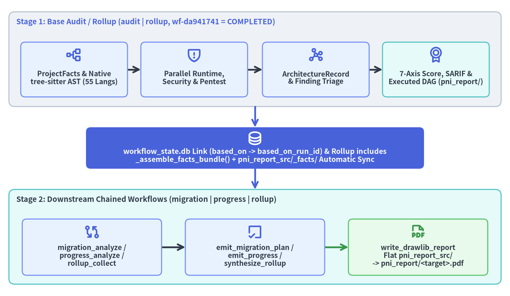

ステートフル Pull-Push エンジン・Workflow v2 DAG・SQLite 永続化
ワークフローが Phase 0 偵察と Pre-Flight 準備完了ゲートを通過すると、pni501 (v0.2.0) は src/pni/_workflows/engine.py、planner.py、state_db.py、_projection.py、provenance.py、aggregator.py、_rollup_engine.py、_migration_engine.py、および _progress_engine.py が統括する 決定論的 Workflow v2 条件付き DAG 実行ループ へと移行します。AI エージェントの揮発しやすいチャットメモリに複数ステップの進捗管理を委ねたり、無意味な逐次 ACK ターンを繰り返したりする代わりに、CLI 自身が権威ある DAG ステートマシンとして機能します。すなわち、対応 55 言語 / 57 文法の決定論的解析器を並列ウェーブ（ThreadPoolExecutor）で自動実行し、get-action / get-actions でステップ別 fact_views とコンパクトスキーマを射影し、push-action で Pydantic スキーマ・実在ファイルパス・誤検知トリアージ（finding_adjustments）を検証し、完了した As-Is 監査を rollup・migration・progress ワークフローへ連鎖させます。

Source Code
from drawlib.canvas import save, setup
from drawlib.diagrams.sequence import Participant, PhosphorIcon, SequenceDiagram
from drawlib.styles import Styles
d = SequenceDiagram(
node_style=Styles.PrimaryBold,
node_text_style=Styles.DarkBold.patch(text_size=10.5),
edge_style=Styles.DarkBold,
edge_text_style=Styles.DarkBold.patch(text_size=10.0),
node_card_style=Styles.Neutral.patch(
text_color=Styles.Dark.text_color, shape_r=1.6
),
autonumber=True,
col_width=56.0,
step_y=7.2,
margin=5.0,
)
agent = d.add(
Participant("AI Agent", width=25.0, height=15.5, icon=PhosphorIcon.ROBOT, icon_size=5.8)
)
engine = d.add(
Participant(
"pni v2 Engine\n(engine + planner)",
width=40.0,
height=15.5,
icon=PhosphorIcon.GEAR_SIX,
icon_size=5.8,
style=Styles.WhiteBold,
text_style=Styles.WhiteBold.patch(text_size=10.0),
card_style=Styles.PrimaryFlat.patch(shape_r=1.6),
)
)
analyzers = d.add(
Participant(
"Recon, Parallel\nAnalyzers & Gates",
width=40.0,
height=15.5,
icon=PhosphorIcon.MAGNIFYING_GLASS,
icon_size=5.8,
card_style=Styles.PrimaryNeutral.patch(shape_r=1.6),
)
)
db = d.add(
Participant(
"workflow_state.db\n(SQLite v2 DAG)",
width=42.0,
height=15.5,
icon=PhosphorIcon.DATABASE,
icon_size=5.8,
card_style=Styles.SecondaryNeutral.patch(shape_r=1.6),
)
)
cache = d.add(
Participant(
"Cache &\npni_report/",
width=28.0,
height=15.5,
icon=PhosphorIcon.FILE_TEXT,
icon_size=5.8,
)
)
agent.request(engine, "workflows plan <id>")
engine.request(analyzers, "Phase 0 Recon, when: & Mermaid")
engine.request(cache, "Write .pni/cache/<wf>/plan.json")
engine.reply(agent, "Mermaid DAG + alignment Qs")
agent.request(engine, "start <id> --auto-approve --pull")
engine.request(db, "INSERT wf-<8hex> & DAG act-01..NN")
with d.opt("plan"):
agent.request(engine, "push act-01 PlanApproval --next")
engine.request(db, "Approve plan; disabled -> skipped")
with d.loop("dag"):
agent.request(engine, "get-action / get-actions <run>")
engine.request(analyzers, "Auto-run det wave (parallel, 0 ACK)")
engine.request(cache, "Write facts.json (+ 15 Tier C DSLs)")
engine.reply(agent, "fact_views + Compact Schema")
agent.request(engine, "push <run> <act> -f json --next")
engine.request(analyzers, "Validate Pydantic, paths & triage")
with d.alt("err"):
engine.reply(agent, "Error detail (in_progress)")
with d.else_("ok"):
engine.request(cache, "Emit score/SARIF + _facts/ sync")
engine.request(db, "Save agent_input_json (completed)")
engine.reply(agent, "Return next ready (--next)")
engine.request(db, "SET workflow_runs.status = completed")
engine.reply(agent, "COMPLETED (Executed DAG)")
dw, dh = d.get_size()
setup(width=int(dw) + 8, height=int(dh) + 6, dpi=150)
d.draw(xy=(4.0, 3.0))
save()
1. Workflow v2 条件付き DAG Pull-Push プロトコル
すべてのステートフルワークフロー実行は、src/pni/_workflows/planner.py と engine.py の 4 フェーズに沿って進行します。ワークフロー YAML の needs / when 記述や Phase 0 Mermaid 検証、Pre-Flight ゲートについては ワークフローと Pre-Flight ゲート を参照してください。
フェーズ 0: 軽量偵察と検証済み Mermaid DAG 計画 (pni workflows plan)
SQLite に状態を書き込む前に、build_workflow_plan() が 1 秒未満でワークスペースを偵察します（discover_repo_components、run_project_inspect、コンテナエンジン検出、evaluate_when_expr）。
- Python の
ast.parse(..., mode="eval")を用いて、eval()を一切使わずにwhen:条件ガードを決定論的偵察コンテキスト（has_runtime_harness,docker_available,has_tests,has_web_api,has_cli,lang,scope,detected_frameworks）に対して安全に評価します。 validate_mermaid_static()で静的検証された決定論的 Mermaidflowchart TDDAG（[AUTO],[AI],[SKIP],[ASK]バッジ付き）を生成し（pni validate-mermaid --browserによる Chromium 実パーサ検証にも対応）、.pni/cache/<workflow_id>/plan.jsonへ保存します。
フェーズ 1: セッション初期化と confirm_plan ゲート (start_workflow_run)
based_onからのターゲット継承と.pni/pni.tomlデフォルト設定を解決して.pni/workflows/<id>.yamlをロードし、フェイルクローズド Pre-Flight ゲート（inspect_base_audit_status,inspect_rollup_prerequisites,inspect_pentests_prerequisite）を強制します。- 複合アクションを
step_key、needs、when、fact_viewsを保持したフラットな DAGPrimitiveStep列（act-01..act-NN）へ正規化し、plan_gate: true（デフォルト）の場合は先頭にconfirm_plan承認ステップを自動挿入します。 - Phase 0 偵察を実行して
when:が偽のノードを即座にskippedとマークし、workflow_runs（run_id = wf-<8hex>）およびaction_runsを SQLite に挿入します。 - 人間承認ゲート vs. 単一コマンド自動承認:
- 対話的アライメント（デフォルト）: 実行は
status = awaiting_approvalで開始されます。confirm_planに対してPlanApprovalInputを push することで、confirmed_targets、disabled_steps（skippedへ遷移）、focus_areas、extra_opt_outs、report_lang、report_formats、report_modeを確定し、in_progressへ移行します。 - CI / 自律エージェント向け単一コマンド開始:
--auto-approve --pull（または--plan <file>）を指定すると、confirm_planを原子的に承認して最初の実行可能 AI アクションプロンプトを即座に取得できます（長文プロンプトは-o <path>でファイル出力可能）。
- 対話的アライメント（デフォルト）: 実行は
フェーズ 2: 並列決定論的ウェーブと射影プロンプト合成 (get-action / get-actions)
エージェントが pni workflows get-action <run_id> で次タスクを取得するか、pni workflows get-actions <run_id> [--ready] で並列フロンティア全体を参照すると、以下が実行されます。
- ゼロ ACK 並列決定論的自動実行 (
_advance_deterministic_actions): AI プロンプトを描画する前に、エンジンはdb.get_ready_actions(run_id)を照会し、最新のProjectFactsに対してwhen:を再評価した上で、DAG 上で実行可能なすべての決定論的プリミティブをThreadPoolExecutor(max_workers=min(4, len(det_ready)))で並列実行します（project_inspect,ast_analyze,run_check,security_scan,web_pentest,migration_analyze,progress_analyze）。各解析結果は直ちにaction_runs.deterministic_output_jsonと.pni/cache/<workflow_id>/facts.json（repoスコープでは 15 種の Tier C コンパニオン DSL スキャンも 1 回実行）へ永続化され、空の{"acknowledged": true}ターンを完全に排除します。 - ステップ別
fact_views射影 (_projection.py): 毎ターン巨大な生 JSON を貼り付けるのではなく、_render_projected_facts()が現在ステップに必要なファクトスライスのみを抽出し、コンパクトスキーマ（任意項目をkey?で表記、--full-schemaで完全 JSON Schema を出力）、カスケード済みルール、並列実行可能な兄弟ステップ、およびemit_score直前の決定論的CompiledAuditDigest（7軸アンカー付きベースライン）を合成します。
フェーズ 3: スキーマ検証・グラウンディング・誤検知トリアージ・成果物出力 (push_workflow_action)
エージェントが pni workflows push-action <run_id> <action_id> --file payload.json --next [-o next.md] を送信すると、以下の処理が行われます。
- DAG フロンティアガード: 厳密な 1 本道の順序ではなく、現在 DAG 上で実行可能な任意の
action_idを受け付けます。これにより独立した並列ステップを任意順で完了でき、依存関係未充足の push は SQLite を変更せず即座に拒否されます。 - Pydantic 検証・実在パス検証・誤検知トリアージ: 送信されたペイロードは正規の Pydantic v2 モデルで検証され、
AstFacts.module_inventoryおよび実在ファイルと照合されます（_verify_grounded_paths）。
| プリミティブ種別 | 検証される Pydantic モデル | 有効な Push 時のグラウンディング・トリアージ・成果物出力 |
|---|---|---|
confirm_plan |
PlanApprovalInput |
plan.json を更新、confirmed_targets / extra_opt_outs を適用し、disabled_steps を skipped にして in_progress へ遷移 |
record_architecture |
SystemProfile / StructureMap / ExecutionFlowMap |
layers[].paths, modules[].path, entry_points, execution_flows[].involved_files の実在を検証し、.pni/cache/<wf>/architecture.json と facts.json を更新 |
ai_interpret |
InterpretationInput |
findings[].file_path と action_items[].target_files の実在を検証し、rule_checks をアクティブルールと opt-out に対して正規化 |
emit_score |
ScoreSubmissionInput -> ScoreResult |
パス検証に加え、誤検知トリアージ（finding_adjustments: waive / reclassify -> triaged_adjustments）を適用、execution_dag（provenance.py）を生成、構造化証跡を pni_report_src/_facts/ へ自動同期し、pni_report/<target>_score.json・*_summary.json・*_findings.sarif.json を出力 |
synthesize_rollup |
RollupSynthesisInput -> ScoreResult |
includes 配下のコンポーネントスコアを集約し、log1p(LOC) 重み付けと最弱リンク保護（security/testing）を適用、execution_dag と components を付与して pni_report_src/_facts/ 同期と統合スコア・SARIF を出力 |
emit_migration_plan |
MigrationPlanResult |
As-Is パスの実在と pr_wbs[].target_files の相対パス安全性を検証し、MigrationFacts と execution_dag を付与、_facts/ 同期の上 pni_report/<target>_migration_plan.json を出力 |
emit_progress |
ProgressAssessmentInput -> ProgressResult |
決定論的 Git ブランチ/PR 解析 ProgressFacts と改修差分を統合し pni_report/<target>_progress.json を出力 |
write_drawlib_report |
ReportCompletionInput |
generated_files（例: pni_report/<target>.pdf）の全パスがワークスペース内に実在し st_size > 0 バイトであることを検証 |
- 自己修正ループと
--next連続取得: バリデーションエラーや架空パス、空 PDF を検出した場合、push_workflow_action()はステップをin_progressに維持して詳細エラーを返します。有効な push でステップがcompletedになると、--next（および任意の-o <file>）指定時には新たにアンブロックされた決定論的ウェーブを自動実行し、次の AI アクションプロンプトを 1 回の CLI 呼び出しで返却します。
# v2 の単一コマンド操作: 計画確認、--auto-approve --pull による開始、--next 付き push
pni workflows plan full_audit -o .pni/cache/full_audit/plan_preview.md
pni workflows start full_audit --auto-approve --pull -o .pni/cache/full_audit/action.md
pni workflows get-actions wf-1a2b3c4d --ready
pni workflows push-action wf-1a2b3c4d act-03 --file .pni/cache/full_audit/input_act-03.json --next
2. SQLite 永続化スキーマと 6 状態 RunStatus ライフサイクル
すべてのステートフルワークフローセッションは .pni/cache/workflow_state.db（src/pni/_workflows/state_db.py の WorkflowStateDB、timeout=30.0 および後方互換の自動 ALTER TABLE マイグレーション付き）に保存されます。

Source Code
from drawlib.canvas import save, setup
from drawlib.diagrams.er import Entity, ERDiagram
from drawlib.diagrams.state import FinalState, InitialState, State, StateDiagram
from drawlib.icons import phosphor
from drawlib.smartarts import Panel
from drawlib.styles import Colors, Styles
setup(width=214, height=112, dpi=150)
left_panel = Panel(
"SQLite v2 Schema (workflow_state.db)",
header_variant="filled",
header_height=8.5,
style=Styles.Neutral.patch(shape_r=2.0),
header_style=Styles.PrimaryFlat,
text_style=Styles.WhiteBold.patch(text_size=11.0),
icon=phosphor.database,
icon_style=Styles.WhiteBold,
)
left_panel.draw(xy=(3.0, 3.0), width=80.0, height=106.0)
erd = ERDiagram(
node_style=Styles.PrimaryNeutral.patch(
text_color=Styles.Dark.text_color, text_size=10.0
),
header_style=Styles.PrimaryNeutral.patch(text_size=10.5),
edge_style=Styles.DarkBold,
edge_text_style=Styles.PrimaryBold.patch(text_size=10.0),
)
wf_ent = erd.add(
Entity(
name="workflow_runs",
width=72.0,
header_height=4.8,
row_height=3.2,
header_style=Styles.PrimaryFlat.patch(text_color=Colors.White, text_size=10.5),
),
xy=(43.0, 76.0),
)
wf_ent.add_column("run_id", type="TEXT", pk=True)
wf_ent.add_column("workflow_id / category", type="TEXT", nullable=False)
wf_ent.add_column("scope / report_mode", type="TEXT", nullable=False)
wf_ent.add_column("plan_gate / plan_approved", type="INT", nullable=False)
wf_ent.add_column("based_on / based_on_run_id", type="TEXT")
wf_ent.add_column("includes_json", type="TEXT", nullable=False)
wf_ent.add_column("status (6-state)", type="TEXT", nullable=False)
wf_ent.add_column("plan_json / targets / outputs", type="TEXT")
act_ent = erd.add(
Entity(
name="action_runs",
width=72.0,
header_height=4.8,
row_height=3.2,
header_style=Styles.SecondaryNeutral.patch(
text_color=Styles.Dark.text_color, text_size=10.5
),
),
xy=(43.0, 24.0),
)
act_ent.add_column("run_id (FK) + action_id", type="TEXT", pk=True)
act_ent.add_column("seq / step_key", type="INT/TEXT", nullable=False)
act_ent.add_column("primitive_type (16)", type="TEXT", nullable=False)
act_ent.add_column("needs_json / when_expr", type="TEXT")
act_ent.add_column("fact_views_json", type="TEXT", nullable=False)
act_ent.add_column("status / skip_reason", type="TEXT", nullable=False)
act_ent.add_column("deterministic_output_json", type="TEXT")
act_ent.add_column("agent_input_json", type="TEXT")
wf_ent.connect(
act_ent,
cardinality="1:1..*",
start_side="bottom",
end_side="top",
label="1..N DAG steps",
)
erd.draw(xy=(0.0, 0.0))
right_panel = Panel(
"6-State RunStatus Lifecycle (Workflow v2 DAG FSM)",
header_variant="filled",
header_height=8.5,
style=Styles.Neutral.patch(shape_r=2.0),
header_style=Styles.PrimaryNeutral,
text_style=Styles.PrimaryBold.patch(text_size=11.0),
icon=phosphor.git_commit,
icon_style=Styles.PrimaryBold,
)
right_panel.draw(xy=(87.0, 3.0), width=124.0, height=106.0)
sd = StateDiagram(
node_style=Styles.SecondaryNeutral.patch(
text_color=Styles.Dark.text_color, shape_r=1.8, text_size=10.0
),
edge_style=Styles.DarkBold,
edge_text_style=Styles.DarkBold.patch(text_size=10.0),
)
s_init = sd.add(InitialState(), xy=(95.0, 87.5))
s_pend = sd.add(
State(
"pending",
shape="box",
entry="INSERT DAG",
width=30.0,
style=Styles.SecondaryNeutral.patch(
text_color=Styles.Dark.text_color, shape_r=1.8, text_size=10.0
),
),
xy=(121.0, 87.5),
)
s_wait = sd.add(
State(
"awaiting_approval",
shape="box",
entry="plan_gate=true",
width=37.0,
style=Styles.WarningNeutral.patch(shape_r=1.8, text_size=10.0),
),
xy=(168.0, 87.5),
)
s_skip = sd.add(
State(
"skipped",
shape="box",
entry="when=false / off",
width=33.0,
style=Styles.Neutral.patch(shape_r=1.8, text_size=10.0),
),
xy=(121.0, 55.5),
)
s_prog = sd.add(
State(
"in_progress",
shape="box",
entry="det wave / pull",
do="validate push",
width=35.0,
style=Styles.PrimaryNeutral.patch(shape_r=1.8, text_size=10.0),
),
xy=(168.0, 55.5),
)
s_done = sd.add(
State(
"completed",
shape="box",
entry="save payload + DAG",
width=36.0,
style=Styles.SuccessNeutral.patch(shape_r=1.8, text_size=10.0),
),
xy=(124.0, 23.5),
)
s_canc = sd.add(
State(
"cancelled",
shape="box",
entry="abort remaining",
width=33.0,
style=Styles.DangerNeutral.patch(shape_r=1.8, text_size=10.0),
),
xy=(176.0, 23.5),
)
s_final = sd.add(FinalState(), xy=(124.0, 8.5))
sd.connect(s_init, s_pend, start_side="right", end_side="left")
sd.connect(s_pend, s_wait, event="gate", start_side="right", end_side="left")
sd.connect(
s_pend,
s_skip,
event="skip",
bend=0.14,
start_side="bottom",
end_side="top",
text_style=Styles.DarkBold.patch(text_size=10.0, halign="right"),
)
sd.connect(
s_pend,
s_prog,
event="ready",
bend=-0.08,
start_side="right",
end_side="left",
text_style=Styles.DarkBold.patch(text_size=10.0, halign="left", valign="bottom"),
)
sd.connect(
s_wait,
s_prog,
event="approve",
start_side="bottom",
end_side="top",
text_style=Styles.DarkBold.patch(text_size=10.0, halign="left"),
)
sd.connect(s_prog, s_prog, side="right", event="invalid")
sd.connect(
s_prog,
s_done,
event="valid push",
start_side="bottom",
end_side="top",
style=Styles.SuccessBold,
text_style=Styles.DarkBold.patch(text_size=10.0, halign="right"),
)
sd.connect(
s_prog,
s_canc,
event="cancel",
start_side="bottom",
end_side="top",
style=Styles.DangerBold,
text_style=Styles.DarkBold.patch(text_size=10.0, halign="left"),
)
sd.connect(s_done, s_final, start_side="bottom", end_side="top")
sd.draw(xy=(0.0, 0.0))
save()
テーブルの責務・実行済み DAG 来歴・Rewind・キャンセル
workflow_runs:run_id（wf-<8hex>）、workflow_id、category（audit,rollup,migration,progress）、scope（repo/component）、plan_gate、report_mode（unified/per_component/both）、based_on/based_on_run_id、includes_json（モノレポロールアップ用）、凍結されたtargets_json/outputs_json、plan_json、plan_approved、auto_approvedを保持します。action_runs:1..Nに正規化された DAG プリミティブ行（PRIMARY KEY (run_id, action_id)）を保持し、step_key、needs_json、when_expr、fact_views_json、rules_json、params_json、skip_reason、deterministic_output_json、agent_input_jsonを管理します。needs_json内の全依存ステップがcompletedまたはskippedに到達した瞬間に DAG 実行可能（db.get_ready_actions()）となります。- 実行済み監査 DAG と誤検知トリアージ (
provenance.py&aggregator.py):emit_score/synthesize_rollup/emit_migration_plan/emit_progressの確定時に、build_execution_dag_summary()が SQLiteaction_runs、plan.json、および同期済みpni_report_src/_facts/マニフェストから不変のExecutionDagSummary（どのステージがAUTO/AI/HYBRID/ASKで実行され、どのステージがどの理由でSKIPされたか）を構築し、ScoreResult.triaged_adjustments（免除・重要度再分類された指摘の監査ログ）とともに記録します。 - 6 状態ライフサイクル (
RunStatus)・Rewind・キャンセル:- 順方向遷移は
pending->（plan_gate: true時はawaiting_approval）->in_progress->completed（when:偽またはconfirm_planで無効化された場合はskipped）です。 pni workflows rewind <run_or_workflow> <action> [--pull] [-o path]（別名retry-action）で指定ステップへ巻き戻し、.pni/workflows/<id>.yamlを再同期して後続出力のみをリセットできます。- 未完了セッションは
pni workflows cancel <run_id>、pni workflows cancel --superseded [-w <wf>]、またはpni workflows start <wf> --supersedeでcancelledに遷移します。
- 順方向遷移は
3. マルチステージ連鎖：Rollup・Migration・Progress ワークフロー
大規模モノレポの統合監査やモダナイゼーション計画は、根拠ある As-Is 診断なしに立案したり、反復のたびに Docker ビルドや Trivy・HTTP ペネトレーションテストをやり直したりすると破綻します。pni501 は 4 つのワークフローカテゴリ 全体にわたって完了済み監査証跡を決定論的に連鎖させます。

Source Code
from drawlib.canvas import save, setup
from drawlib.diagrams.architecture import ArchitectureDiagram, Node, NodeGroup, PhosphorIcon
from drawlib.styles import Styles
setup(width=172, height=100, dpi=150)
diag = ArchitectureDiagram(
node_style=Styles.PrimaryBold,
node_text_style=Styles.DarkBold.patch(text_size=10.0),
edge_style=Styles.DarkBold,
edge_text_style=Styles.DarkBold.patch(text_size=10.0),
node_card_style=Styles.PrimaryNeutral.patch(
text_color=Styles.Dark.text_color, shape_r=1.5
),
)
g_stage1 = diag.add(
NodeGroup(
title="Stage 1: Base Audit / Rollup (audit | rollup, wf-da941741 = COMPLETED)",
width=166.0,
height=32.0,
style=Styles.Neutral.patch(shape_r=2.0),
text_style=Styles.PrimaryBold.patch(text_size=10.5, halign="left", valign="top"),
),
xy=(3.0, 64.0),
)
s1_static = g_stage1.add(
Node(
"ProjectFacts & Native\ntree-sitter AST (55 Langs)",
width=36.0,
height=18.5,
icon=PhosphorIcon.TREE_STRUCTURE,
icon_size=5.4,
),
xy=(22.0, 12.5),
)
s1_dyn = g_stage1.add(
Node(
"Parallel Runtime,\nSecurity & Pentest",
width=36.0,
height=18.5,
icon=PhosphorIcon.SHIELD_WARNING,
icon_size=5.4,
),
xy=(62.5, 12.5),
)
s1_arch = g_stage1.add(
Node(
"ArchitectureRecord\n& Finding Triage",
width=36.0,
height=18.5,
icon=PhosphorIcon.GRAPH,
icon_size=5.4,
),
xy=(103.5, 12.5),
)
s1_score = g_stage1.add(
Node(
"7-Axis Score, SARIF &\nExecuted DAG (pni_report/)",
width=36.0,
height=18.5,
icon=PhosphorIcon.MEDAL,
icon_size=5.4,
card_style=Styles.SecondaryNeutral.patch(shape_r=1.5),
),
xy=(144.0, 12.5),
)
n_bridge = diag.add(
Node(
"workflow_state.db Link (based_on -> based_on_run_id) & Rollup includes\n_assemble_facts_bundle() + pni_report_src/_facts/ Automatic Sync",
width=114.0,
height=14.0,
icon=PhosphorIcon.DATABASE,
icon_size=5.4,
style=Styles.WhiteBold,
text_style=Styles.WhiteBold.patch(text_size=10.2),
card_style=Styles.PrimaryFlat.patch(shape_r=1.6),
),
xy=(86.0, 50.0),
)
g_stage2 = diag.add(
NodeGroup(
title="Stage 2: Downstream Chained Workflows (migration | progress | rollup)",
width=166.0,
height=32.0,
style=Styles.SecondaryNeutral.patch(shape_r=2.0),
text_style=Styles.DarkBold.patch(text_size=10.5, halign="left", valign="top"),
),
xy=(3.0, 4.0),
)
s2_mig = g_stage2.add(
Node(
"migration_analyze /\nprogress_analyze /\nrollup_collect",
width=47.0,
height=19.0,
icon=PhosphorIcon.GIT_DIFF,
icon_size=5.4,
),
xy=(28.0, 12.5),
)
s2_plan = g_stage2.add(
Node(
"emit_migration_plan /\nemit_progress /\nsynthesize_rollup",
width=47.0,
height=19.0,
icon=PhosphorIcon.CHECK_SQUARE_OFFSET,
icon_size=5.4,
card_style=Styles.PrimaryNeutral.patch(shape_r=1.5),
),
xy=(83.0, 12.5),
)
s2_pdf = g_stage2.add(
Node(
"write_drawlib_report\nFlat pni_report_src/\n-> pni_report/<target>.pdf",
width=47.0,
height=19.0,
icon=PhosphorIcon.FILE_PDF,
icon_size=5.4,
style=Styles.SuccessBold,
card_style=Styles.SuccessNeutral.patch(shape_r=1.5),
),
xy=(138.0, 12.5),
)
diag.connect(s1_static, s1_dyn, routing="orthogonal")
diag.connect(s1_dyn, s1_arch, routing="orthogonal")
diag.connect(s1_arch, s1_score, routing="orthogonal")
diag.connect(g_stage1, n_bridge, routing="orthogonal", style=Styles.PrimaryBold)
diag.connect(n_bridge, g_stage2, routing="orthogonal", style=Styles.PrimaryBold)
diag.connect(s2_mig, s2_plan, routing="orthogonal")
diag.connect(s2_plan, s2_pdf, routing="orthogonal", style=Styles.SuccessBold)
diag.draw(xy=(0.0, 0.0))
save()
エンドツーエンドの連鎖メカニクス (engine.py, _rollup_engine.py, _migration_engine.py, _progress_engine.py)
- モノレポ・マルチコンポーネントロールアップ (
category: rollup):includes: [...]（id,workflow_id,root,lang, 任意のweight,primaryを持つRollupComponentSpec）を宣言します。inspect_rollup_prerequisites()が開始前に全コンポーネントの<output_dir>/<id>_score.jsonの存在を検証し、execute_rollup_collect()が明示的重みまたはlog1p(LOC)平滑化で 7 軸スコアを統合します。さらに 最弱リンク保護ガードレール（securityとtestingを主要コンポーネント最小スコア+15点以内に制限）を適用し、ルートガバナンスおよび 15 種の Tier C コンパニオン DSL をスキャンした上で、統合ロールアップScoreResult・SARIF・7章 Drawlib レポートをpni_report/へ出力します。
based_on_run_idのピン留めと自動ファクト再構築 (category: migration):pni workflows start <migration_id>実行時にinspect_base_audit_status()がbased_onの直近完了実行をworkflow_runs.based_on_run_idにピン留めします。- Stage 2 の全ステップで
_assemble_facts_bundle()が SQLite からproject_facts,ast_facts,runtime_facts,security_facts,pentest_facts,architecture_record,base_score_resultを復元し、migration_analyze（トポロジカル Wave1..4、Tarjan SCCcycle_cuts、implicit_contracts、env_contracts、boundary_touchpoints、mechanical_codemods、DEC-01..NNspec_vs_bug_candidates）へ供給します。 validate_and_persist_migration_plan()が As-Is パスの実在検証・execution_dag付与・pni_report_src/_facts/同期を行い、pni_report/<target>_migration_plan.jsonおよび 7章構成マイグレーション PDF（pni_report/<target>.pdf）を出力します。
- Git 履歴連動の改修進捗トラッキング (
category: progress):.pni/history/audit/<based_on>.jsonlとpni_report/<based_on>_score.jsonにリンクするため、.pni/cache/workflow_state.dbが存在しない新規 CI チェックアウト環境でも動作し、ベースライン監査・移行計画に対するブランチ/コミット進捗を計測してpni_report/に進捗レポートを出力します。フラットレポート生成の詳細は Drawlib ビジュアルレポーター を参照してください。